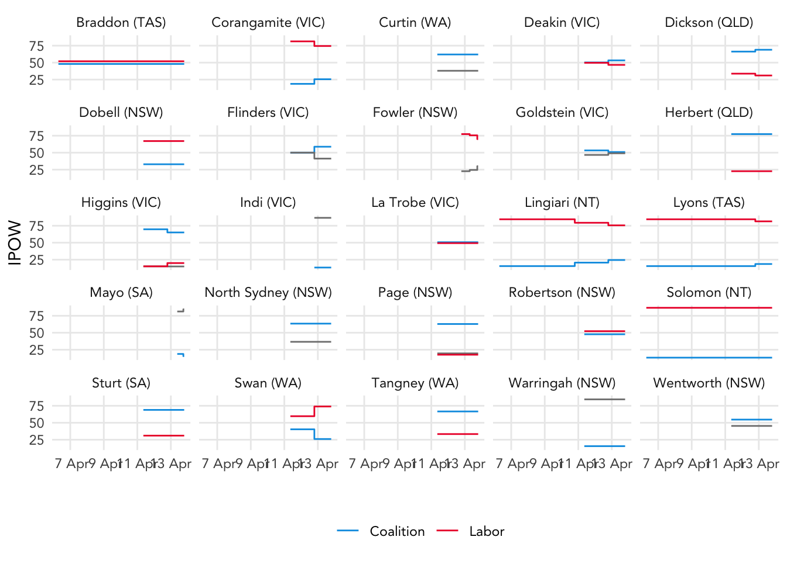
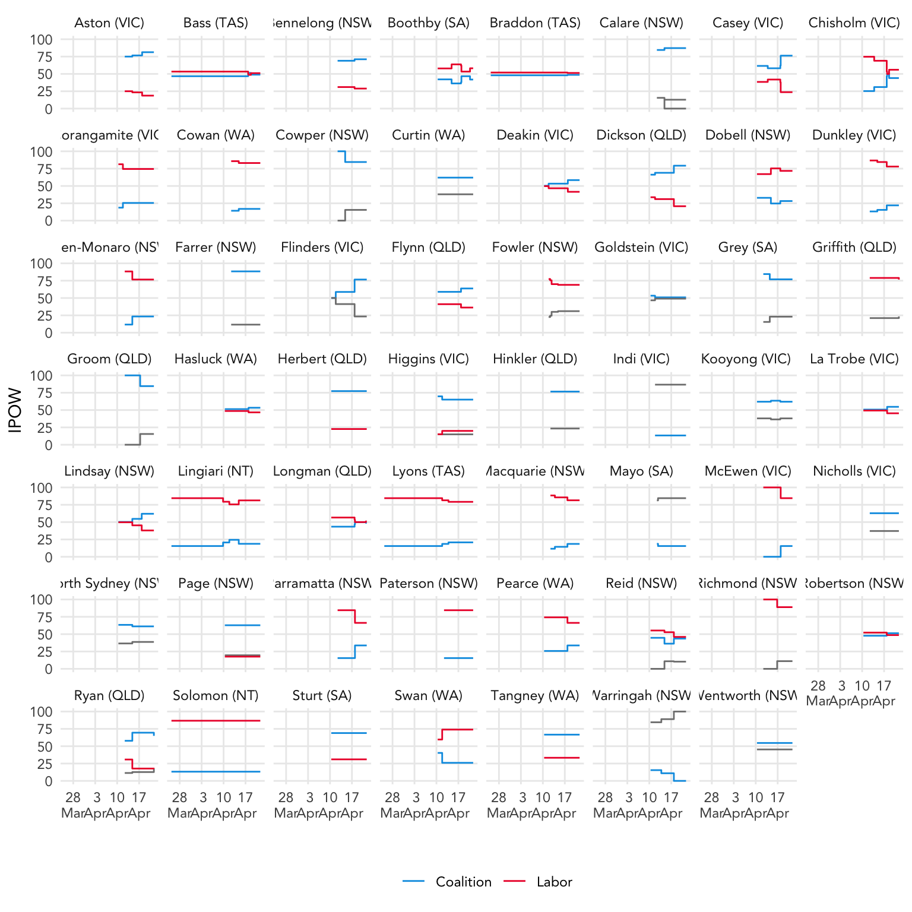

As of 7am Friday 15 April, Sportsbet betting odds imply:
Labor to form the next government with 60.8% probability.
10 House of Representatives seats are priced as changing hands; see section 3.3 below.
Independents favourites in 3 seats: Clark, Indi, Warringah.
Current Sportsbet prices are consistent with a 3.6 percentage point TCP swing from the Coalition to Labor; see 3.4 below.
This analysis examines Sportsbet odds in various election betting markets for the 2022 Australian federal election.
We convert odds into implied probabilities of winning (IPOW) using a procedure explained in the Appendix.
In the tables and charts below, we express IPOWs as percentages. Long shots (IPOWS < 10%) are set to zero and the remaining IPOWs re-normalised to sum to 100%.
As of 7am Friday 15 April:
| Result | Price | IPOW | IPOW (no long shots) |
|---|---|---|---|
| Labor | 1.55 | 59.9 | 60.8 |
| Coalition | 2.40 | 38.7 | 39.2 |
| Any Other | 67.00 | 1.4 | 0.0 |
Time series:
We compute expected seat counts by summing the seat-specific probabilities of winning implied by Sportsbet’s odds as at 7am Friday 15 April. In seats where Sportsbet is not currently offering prices we use the last observed odds in that seat.
The second column of seat counts removes “long-shots”; the third column counts seats where the indicated party has the highest IPOW.
| Party | Expected Seats |
Expected Seats (no long-shots) |
Seats where favourite |
|---|---|---|---|
| ALP | 70.9 | 77.3 | 77 |
| GRN | 5.6 | 1.9 | 1 |
| IND | 9.5 | 7.4 | 3 |
| LNP | 59.8 | 62.5 | 68 |
| OTH | 5.7 | 1.9 | 2 |
| PHON | 1.7 | 0.0 | 0 |
The following 10 seats have candidates of incumbent parties with IPOWs of less than 50% (again, with long-shot probabilities removed):
With long-shot probabilities again set to zero, we examine the relationship between IPOWs and two-candidate preferred results in each seat, using 2019 results or notional results in the event of electoral redistributions since 2019.
Current Sportsbet prices are broadly consistent with the assumption of a 3.6 percentage point TCP swing from the Coalition to Labor.
The blue line is a smoothing spline.
Roll a mouse or pointing device over individual data points for more information.
Seats with odds changing in the last 24 hours:
Seats with odds changing in the last week:

Seats with odds changing hands last 28 days: 
Australian bookmakers tend to use decimal odds, the return to the punter of a successful unit or one-dollar wager. In general, the more likely the event, the closer the decimals odds approach 1.00 from above; conversely, the less likely the event, decimal odds take on increasingly larger values.
If \(d = (d_1, \ldots, d_J)'\) are decimal odds over \(J\) mutually exclusive and exhaustive outcomes then the implied probability of event \(j \in 1, \ldots, J\) is conventionally recovered as
\[\begin{equation} p_j = \frac{1/d_j}{\sum_{k=1}^J 1/d_k} \tag{4.1} \end{equation}\]
In the context of elections, we refer to \(p_j\) as the implied probability of winning or IPOW for party or candidate \(j\).
This transformation of decimal odds into IPOWs can be rationalised as follows. Bookmakers set prices not merely as a function of their beliefs about outcomes, but also to lock in profits. The most telling case comes from observing that for coin tosses ahead of cricket matches, bookmakers typically offer prices of \(d\) = 1.91 or thereabouts for each of the two outcomes; more surprising is that gamblers participate in this market at all. This is a case where the actual probabilities held by both bookmakers and punters can be reasonably presumed to be 50-50 on each of the two outcomes. A fair price on a unit wager is therefore 2.00, with expected value of 1.00 = .5 \(\times\) 2.00 + .5 \(\times\) 0.
Observe that the fair price of \(d\) = 2.00 is simply the inverse of the probability of \(p\) = .5. This result generalises: fair decimal odds are simply the inverse of the probabilities of the corresponding events, or \(d = 1/p\) and conversely \(p = 1/d\).
But bookmakers prices can not be assumed to be fair. For the coin toss example, the bookmakers’ prices of less than the fair price of 2.00 reflect their profit margin. With decimals odds of \(d\) = 1.91, the bookmaker will lose 91 cents on each successful dollar wager, but keep $1.00 on each unsuccessful wager. This asymmetry in payouts with respect to equally likely events is the key to the adage that “the house always wins”. In this example the bookmaker has an expected yield of 4.5c cents per dollar waged.
Alternatively, applying the rule that probabilities are the inverses of the corresponding decimal odds, then with prices of 1.91 on both outcomes, the bookmaker’s apparent probabilities are 0.5236 for each outcome. This clearly violates the law of total probability (that the probabilities over the set of possible outcomes sum to one), in this case summing to 1.0471.
The apparent “extra probability” is known as the “over-round” or “vigorish”. Bookmakers prices therefore reflect at least two inputs: (1) probabilities about events; (2) profit margins (Cortis 2015). Let \(p_j\) be the bookmakers’ privately held probability of event \(j\). A profit-motivated bookmaker offers prices of \(d_j = 1/\pi_j\), where \(\pi_j = p_j(1+k_j)\) with \(k_j > 0\) the source of the bookmaker’s profits.
In the literature assessing the predictive value of betting markets, the conversion from decimal odds almost always assumes \(k_j\) is a constant \(k\) over all events \(j\), giving rise to the transformation
\[ \frac{1/d_j}{\sum_j 1/d_j} = \frac{\pi_j}{\sum_j \pi_j} = \frac{p_j(1+k)}{\sum_j p_j(1+k)} = \frac{(1+k)\, p_j}{(1+k)\sum_j p_j} = p_j, \] as per equation (4.1).
Štrumbelj (2014) and Levitt (2004) survey cases where \(k_j\) might reasonably be expected to not be constant over outcomes \(j\); examples include information and skill asymmetries between bookmakers and punters and/or bookmakers seeking to counter insider-trading. Betting markets with large numbers of gamblers and bookmakers should generally drive these effects towards zero, resulting in small variability in \(k_j\) over alternatives, validating the mapping from odds to IPOWs in equation (4.1).
Of course, prior research suggests that seat-by-seat markets are thinly traded, and so we interpret IPOWs in these markets with appropriate caveats. Following my earlier work (Jackman 2015), one of the goals of this analysis in its post-election phase will be to assess the calibration of IPOWs with election outcomes.